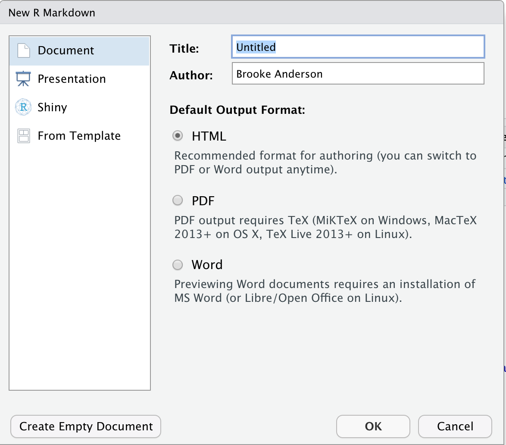

3.9 Creating and exploring an Rmarkdown file
First, we will explain how you can create a new Rmarkdown document using RStudio. In RStudio, you can create a number of types of new files through the “File” menu. To create a new R markdown file, choose “New File” and then choose “Rmarkdown” from the choices in that menu. Figure 3.5 shows an example of what this menu option looks like.
Figure 3.5: RStudio pull-down menus to help you navigate to open a new Rmarkdown file.

This will open a window with some options you can specify some of the overall information about the document (Figure 3.6), including the title and the author and you can specify the output format that you would like. Possible output formats include HTML, Word, and PDF. You should be able to use the HTML and Word output formats without any additional software. If you would like to use the PDF output you will need to install one other piece of software: Miktex for Windows, MacTex for Mac, or TeX Live for Linux. These are all pieces of software with an underlying TeX engine and all are open-source and free.
Figure 3.6: Options available when you create a new Rmarkdown file in RStudio.
Once you have selected the options in this menu you can choose the “Okay” button (Figure 3.6). This will open a new document. This document, however, won’t be blank. Instead it will include an example document written in Rmarkdown (Figure [x]). This example document helps you navigate how the Rmarkdown process works, by letting you test out a sample document. It also gives you a starting point—once you understand how the example document works, you can edits it and change it to convert it into the document you would like to create.
[Example of template]
If you have not used Rmarkdown before, it is very helpful to try knitting this example document, before making your own changes to it, to explore how pieces in the document align with elements in the rendered output document. Once you are familiar with the line-up between elements in this file in the output document, you delete parts of the example file and insert your own text and code.
We will walk you through exploring this example document. First to render this or any rmarkdown document, if you are in our studio, there will be a knit button, as shown in the figure. You can click on this knit button to render the entire document. The final output will pop up in a new window, and you will also notice that your working directory as a new file with this output document. For example, if you are working to create an HTML document, once you knit your rmarkdown file, a new document will open showing the output, and you will also notice a new file with the same start of the filename as you are marked on document, but with the file extension. HTML. this new file is your output file, the one you should consider read only, and the one that you would share with colleagues as a report.
[Figure highlighting knit button] if you look at the Outpost document from the example you get when you first open an R markdown document you can notice how different elements align with pieces in the rmarkdown file. For example you can see BetOnline 12 of the example the two hash fine are indicating that this should be a second level header. In the output document, you can see that rmarkdown is indeed specified as a Hatter, with larger font and in a different color than other text. You can also see that elements like the web link, which is in Brackets? In the rmarkdown file shows up as a clickable link in the output document. Finally, you can see that the word net in line 16 of the r markdown file is surrounded by to asterisk. In the output document this word shows up in bold. You can also notice the areas in the rmarkdown file that are code for example line 18 indicates the start of executable code and my 19 gives the code. In this case it is running a summary of a data set that comes with are called cars. in the alpha document you can see that this code is repeated, and the output from running the code is inserted in the final document. Line 20 of the example R markdown file give three back text indicating the end of that executable chunk of code. [Figure aligning example with output—header with header, weblink with weblink, bold with bold, code with code] R markdown has some other functionality that is useful when you are working with this document. Within each Co Chuck are some buttons that can be used to test out code in that junk. A key 1/2 youth is the execute button this is highlighted in the figure and it is a right pointing Green Arrow. this button will run all of the code in that chunk and show you the output directly below it. This allows you to explore the code in your document as you build it, rather than needing to wait until you execute or render the entire document to check on how the code is running. the button directly to the left of Beth will execute all code that comes before this junk in the document. This can be very helpful in making sure that you have set up your environment to run this particular chunk of code. for the main text in an R markdown document, all formatting is done using markdown syntex. markdown is a popular markup language that is a good bit simpler than other options like HTML or latek. This Simplicity means that it is not quite as expressive as the other languages, however it typically provides the formatting for almost everything you would want to do, am I staying simpler, it is much easier to learn this quickly and to get the hang of using a markup Language. As with other markup languages, markdown uses special characters or symbols or conventions to indicate formatting within the plain text. When the document is rendered these markings are used by the software to convert into the formatting that you have specified. Some example formatting symbols and conventions for markdown include for bold to* are used to surround the word or phrase, for italics a single Asterix is used to surround the word or phrase, first level headers or specified on a new line that starts with a hash symbol and then a space, second level headers are similar but used to hashes and so on for lower-level Hatter’s, a blank line indicates a
In other words there will be to return used to set up a new paragraph, and hyphens on new lines can be used to specify itemized list. One thing to keep in mind when using markdown is that white space can be very important in specifying the formatting. For example when you specify a new paragraph, you must leave a blank line from your previous text. Similarly when you’re using a hash to indicate a header you must leave a blank face after the house before the wording that you want to be used in that head. [Examples of this] The markdown syntax is fairly simple and can be learned fairly quickly. firm or you can see the rmarkdown reference guide at https://rstudio.com/wp-content/uploads/2015/03/rmarkdown-reference.pdf. The basic formatting rules for marked down are also covered any number of more extensive resources for R markdown that we will point you to later in this module. The next element of R markdown is that there are many options that you can set for each Co chunk. These options will specify how the code in that section is run and how output is presented. these are called chunk options and they are specified in the area where you mark the start of executable code. Some of these options include eval which specifies whether to evaluate the code in that option. This can be useful if you wanted to show some code but not to run it in that section. The echo option can be used to specify whether to print the code. For a pre-processing protocol it can be very helpful to print out all of the code so that future researchers who read that protocol can clearly see each step you took. By contrast if you are using R markdown to create a report or an article that is focused on the results of urinalysis, it may make more sense two instead include no code. You can also specify whether messages and warnings created when running the code should be included in the document output, and there are number of code chunk options that specify how tables and figures rendered by the code should be shown. For more details on the possible options that can be specified for how code is evaluated with an H on you can see the r markdown cheat sheet available at https://rstudio.com/wp-content/uploads/2015/02/rmarkdown-cheatsheet.pdf The resources that we have pointed she’s so far cover the basics of using R markdown. You can get quite a lot done just with these Basics. However the rmarkdown system is also very rich and allows quite complex operation. Here we will highlight just a few of the ways did armor down can be used in a more advanced method, and we will focus on some of the elements that we have found to be particularly useful for biomedical researchers to you. We will not go into great job about how to use these but instead point to resources where you can learn more. If you are just learning rmarkdown produce more advanced features at this point it may mostly just be helpful to know that they’re out there and that you can check them out once you become more familiar with using the basics of R markdown. First you can use R markdown, in contact with something called bib tag, as a referencing system. This allows you to include bibliographical references in the documents that you create, and R markdown will handle the creation of the references section and the numbering of the documents Within your text. Second you can include math and mathematical equations with in your rmarkdown document. this allows you to use Clean and Clear formatting anytime you are testifying an equation within your document. With r markdown the default is to include code that is executed in our. However especially in workflows for biological data, you may need to use different languages for different parts of your workflow. Rmarkdown will allow you to specify that code and specific chunks of code should be run using different languages. You can include specifications to run code in languages like Python and other options. As mentioned earlier markdown is a fairly simple markup language. It can do a lot but occasionally the Simplicity means that you might not be able to create fancier formatting that you might desire. For R markdown it will allow you to shift into a more complex markup language in those cases. This does restrict you with that because it will depend on what output format you are using and as a result at that point you will only be able to render to a single output format typically. However this functionality allows you to incorporate specifications for me there lay Tech if you are rendering to PDF or HTML if you are rendering in that format. This allows for very complex formatting within an R markdown document. Here we have focused on creating report documents as a basic type of document output. However rmarkdown will allow you to Output to a number of different formats. For example the Articles package includes templates for a number of different Journal and allows you to use R markdown to directly write your Journal article into the journals desired format. You can also create presentations either as PDF slideshow, as PowerPoint, where is HTML slides using different options under the presentation Tab 4 armor John. R markdown is also now able to be used to create larger projects that are pulling together multiple documents created in an R markdown format these include online books that can be also render to PDF through the package book down. It also includes websites with a Blog section through the block down package and online dashboards through the flex dashboard package. There’s some excellent and free resources for learning both basics and advanced features of R markdown. The team developing rmarkdown is largely based out of our studio, and so many of the resources are available through our studios website they have a specific section on R markdown available at https://rmarkdown.rstudio.com/. This way webpage includes tutorial both for Basics and more advanced topics, a gallery where you can see examples of hell are marked down as used and find the code to try it’s acting it for your own use, and it fence articles. Members of this development team have also created two excellent free online books these are available online and also in print. the first is R markdown the definitive guide and the second is the rmarkdown cookbook. The first book provides an ordered look through different topics in R markdown, while the second is excellent first searching for a particular thing that you want to do with r markdown and then get it going directly to a section that describes how to do that using a cookbook approach.
3.9.1 RMarkdown
You can easily create and render knitted documents directly in R through RMarkdown documents. While RMarkdown documents can be created and rendered through any implementation of R, there are very nice facilities for creating and working with these documents in the RStudio IDE for R, so in this section we’ll focus on this interface. RStudio is a free IDE that is available for download online. You should download and install R before you install the RStudio IDE, but once you do, the installation of RStudio should be very straightforward. Many of the resources for learning R now focus on use of the RStudio IDE as an interface for R, so there are lots of available resources for learning more about RStudio if you are new to this IDE.
…
[More about RMarkdown specifically]
3.9.2 Creating and rendering RMarkdown documents
In this subsection, we’ll cover some of the basics of writing and rendering knitted documents in R using RStudio. We will first provide a quick overview of working with RMarkdown. We will not go into depth on all details of the system, since there are excellent resources for learning these details. However, we will go over several details that are very helpful but that a lot of people learning RMarkdown don’t realize are available, so you will know they are available when you’re ready to learn and incorporate them.
[How to create an RMarkdown document]
In the previous module, we described how knitted documents use special markers to indicate where sections of executable code start and stop. In RMarkdown, the markers you will use to indicate executable code look like this:
```r{}
my_object <- c(1, 2, 3)
```The first part of this marker (```r{}) indicates that a section of
code is starting. Then end part (```) indicates that the file is
moving back to regular Markdown. In the first marker, you can use the simplest
form (```r{}) to indicate the start of the code. However, you can also
include options to customize actions when the code in that section is executed.
For example, you can specify that the code should be printed in the document,
but not executed, by setting the eval parameter to FALSE with ```{r eval = FALSE} as the marker to start the code section. Among the other
options that can be included here are options to:
- specify the image size and output size of figures created by the code
(
fig.width,fig.height,out.width,out.height) - suppress messages, warnings, and errors generated when the code is
executed (
message,warning,error) - specify whether to print the code or not (for a tutorial, you will want
others to be able to see the code as an example, while for a report, you
might want the reader to focus on the output) (
echo)
[How to render to Word]
You can chose to render your document to other formats, as well. The two main other formats you may consider are HTML and pdf. You can set up these choices when you first create your RMarkdown document. However, even if you set up a document to render to Word, you can change its settings later so it will render to these other formats. We’ll cover several ways to do this, and some other set-up that’s require to render a document to pdf, in the next few paragraphs.
You can easily render the RMarkdown document to HTML instead of Word by changing the output format for the document before you knit it. There are a couple of ways you can make this change. First, if you are rendering the document in RMarkdown, click on the down arrow directly to the right of the “Knit” button. In that pull-down menu, you can select the “Knit to HTML” option, and the document will render to HTML.
You can also change the output format to HTML in a special section at the top of
the RMarkdown document called the “YAML.” The YAML is a special section at the
top of an RMarkdown document (the original, plain text file, not the rendered
version). It is set off from the rest of the document using a special
combination of characters, using a process very similar to how executable code
is set off from other text with a special set of characters so it can be easily
identified by the software program that renders the document. For the YAML, this
combination of characters is three hyphens (---) on a line by themselves to
start the YAML section and then another three on a line by themselves to end it.
Here is an example of what the YAML might look like at the top of an RMarkdown
document:
---
title: "Laboratory report for example project"
author: "Brooke Anderson"
date: "1/12/2020"
output: word_document
---Within the YAML itself, you can specify different options for your document.
You can change simple things like the title, author, and date, but you can
also change more complex things, including how the output document is rendered.
For each thing that you want to specify, you specify it with a special
keyword for that option and then a valid choice for that keyword. The idea
is very similar to setting parameter values in a function call in R. For
example, the title: keyword is a valid one in RMarkdown YAML. It allows you
to set the words that will be printed in the title space, using title formatting,
in your output document. It can take any string of characters, so you can put in
any text for the title that you’d like, as long as you surround it with quotation
marks. The author: and date: keywords work in similar ways. The output:
keyword allows you to specify the output that the document should be rendered to.
In this case, the keyword can only take one of a few set values, including
word_document to output a Word document, pdf_document to output a pdf
document (see later in this section for some more set-up required to make that
work), and html_document to output an HTML document.
As you start using RMarkdown, you will be able to do a lot without messing with the YAML much. In fact, you can get a long way without ever changing the values in the YAML from the default values they are given when you first create an RMarkdown document. As you become more familiar with R, you may want to learn more about how the YAML works and how you can use it to customize your document—it turns out that quite a lot can be set in the YAML to do very interesting customizations in your final rendered document. The book R Markdown: The Definitive Guide [ref], which is available free online, has sections discussing YAML choices for both HTML and pdf output, at https://bookdown.org/yihui/rmarkdown/html-document.html and https://bookdown.org/yihui/rmarkdown/pdf-document.html, respectively. There is also an interesting talk available online that Yihui Xie, the creator of RMarkdown, gave on this topic at a past RStudio conference, available at https://rstudio.com/resources/rstudioconf-2017/customizing-extending-r-markdown/.
If you’d like to render the output document to pdf, the process is similar, but it will require you to download an additional piece of (free) software. RStudio uses a program based on a software program called TeX to render RMarkdown documents to pdf. You will need to get different software depending on the operating system (OS) of your computer. If you are using a Mac OS, then you should download [MacTex—more on this], while if you are using a Windows OS, then you should download [MicTex—more on this]. [More info on getting this software—don’t select the lightweight option, etc.] Once you’ve installed this software, restart your RStudio session to help RStudio identify the new program as it starts [is this necessary?].
Once you’ve installed an implementation of TeX, you can use the same process to change the output format for an RMarkdown document to pdf as you can to change to HTML—either change the selected output format in the pull-down menu accessed with the arrow to the right of the “Knit” button, or change the output format in the YAML of the RMarkdown document [to …?].
3.9.3 Some helpful additional features in RMarkdown
The previous subsection gave an overview of the basics of creating and rendering a document with RMarkdown. We gave just an overview, as there are many resources for learning and practicing RMarkdown that are available, including many that are freely available online. In this sections, we’ll point you to some of those resources.
To learn more about RMarkdown, you can explore a number of excellent resources. The most comprehensive are shared by RStudio, where RMarkdown’s developer and maintainer, Yihui Xie, works. These resources are all freely available online, and some are also available to buy as print books, if you prefer that format.
First, you should check out the online tutorials that are provided by RStudio on RMarkdown. These are available at RStudio’s RMarkdown page: https://rmarkdown.rstudio.com/. The page’s “Getting Started” section (https://rmarkdown.rstudio.com/lesson-1.html) provides a nice introduction you can work through to try out RMarkdown and practice the overview provided in the last subsection of this module. The “Articles” section (https://rmarkdown.rstudio.com/articles.html) provides a number of other documents to help you learn RMarkdown.
RStudio’s RMarkdown page also includes a “Gallery” (https://rmarkdown.rstudio.com/gallery.html). This resource allows you to browse through example documents, so you can get a visual idea of what you might want to create and then access the example code for a similar document. This is a great resource for exploring the variety of documents that you can create using RMarkdown.
To go more deeply into RMarkdown, there are two online books from some of the same team that are available online. The first is R Markdown: The Definitive Guide by Yihui Xie, J. J. Allaire, and Garrett Grolemund [ref for this book]. This book is available at https://bookdown.org/yihui/rmarkdown/. It moves from basics through very advanced functionality that you can implement with RMarkdown, including several of the topics we highlight later in this subsection.
The second online book to explore from this team is R Markdown Cookbook, by Yihui Xie, Christophe Dervieux, and Emily Riederer. This book is a helpful resource for dipping in to a specific section when you want to learn how to achieve a specific task. Just like a regular cookbook has recipes that you can explore and use one at a time, this book does not require a comprehensive end-to-end read, but instead provides “recipes” with advice and instructions for doing specific things. For example, if you want to figure out how to align a figure that you create in the center of the page, rather than the left, you can find a “recipe” in this book to do that.
3.9.4 Some helpful additional features in RMarkdown
Some of the references mentioned in the last subsection are very comprehensize. Therefore, in this section, we’ll point out and briefly overview several features that you might not be introduced to in introductory RMarkdown tutorials, but we have found can be very useful for researchers who are using RMarkdown to document their code for scientific projects. You can find more details about these in the references given in the last subsection, so in this subsection, our aim is to help make you aware that these resources are available if you need them and to point you to places where you can find out more.
[How to extract just the code from the document]
[How to include references using BibTex as a reference manager]
[How to include formulas and math]
In your RMarkdown documents, you include executable code in special sections (“chunks”) that are separated from the regular text using a special combination of characters. By default, the code in these chunks are executed using the R programming language. However, you can also include executable code in a number of other programming languages. For example, you could set some code chunks to run Python, others to run Julia, and still others to run a shell script [?].
This can be very helpful if you have steps in you Python that use code in different languages. For example, there may be a package [?] in Python that works well for an early step in your data preprocessing, and then later steps that are easier with general R functions. This presents no problem in creating an RMarkdown data pre-processing protocol, as you can include different steps using different languages.
The program that is used to run the code in a specific chunk is called the “engine” for that chunk [?]. You can change the engine [where in the code chunk markup]. [More on this.] When your RMarkdown document is rendered, your computer will use the specified software to run each code chunk. Of course, to run that piece of code, your computer must have that type of software installed and available. For example, if you include a chunk of code that you’d like to run with a Python engine, you must have Python on your computer.
While you can use many different software programs as the engine for each code chunk, there are a few limitations with some programs. For many open-source software programs, the results from running a chunk of code with that engine will be available for later code chunks to use as an input. This is not the case, however, for some proprietary software [?]. For example, if you use the SAS software program as the engine for one of your code chunks, the output from running that code will not be available to input to later code in the document [?].
Some code can take a while to run, particularly if it is processing very large datasets. By default, RMarkdown will re-run all code in the document every time you render it. This is usually the best set-up, since it allows you to confirm that the code is all executing as desired each time the code is rendered. However, if you have steps that take a long time, this can make it so the RMarkdown document takes a long time to render each time you render it.
To help with this problem, RMarkdown has a system that allows you to cache results from some or all code chunks in the document. This is a really nice system—it will check the inputs to that part of the code each time the document is run. If those inputs have changed, it will take the time to re-run that piece of code, to use the updated inputs. However, if the inputs have not changed since the last time the document was rendered, then the last results for that chunk of code will be pulled from memory and used, without re-running the code in that chunk. This saves time most of the times that you render the document, while taking the time to re-run the code when necessary, because the inputs have changed and so the outputs may be different.
[More on caching from RMarkdown, including things to look out for, like the size of the document as it grows to include cached values.]
[Using journal article templates]
You can use RMarkdown to create documents other than traditional reports. Scientists might find the outputs of presentations and posters particularly useful.
RMarkdown has allowed a pdf slide output for a long time. This output leverages the “beamer” format from LaTeX. You can create a series of presentation slides in RMarkdown, using Markdown to specify formatting, and then the document will be rendered to pdf slides. These slides can be shown using a pdf viewer [?], like Adobe Acrobat, set either to full screen or to the presentation option [?]. More recently, capability has been added to RMarkdown that allows you to create PowerPoint slides. Again, you will start from an RMarkdown document, using Markdown syntax to do thinks like divide content into separate slides. Regardless of the output format you choose (pdf slides or PowerPoint), the code to generate figures and tables in the presentation can be included directly in the RMarkdown, so it is re-run with the latest data each time you render the presentation.
[Where to find out more about creating presentations with RMarkdown]
It is also possible to use RMarkdown to create scientific posters, although this is a bit less common and there are fewer tutorial resources with instructions on doing this. [More on making posters with RMarkdown. Some examples on GitHub.]
It is very easy to add figures and simple tables to RMarkdown documents, and this process is covered thoroughly in basic tutorials on RMarkdown. However, as you start using RMarkdown more and more, and want to use it to create article drafts, posters, and presentations, you may want to create more customized tables.
There is an R package that allows you to create very attractive and complex tables in RMarkdown documents. This package leverages more of the power of underlying markdown languages, rather than the simpler Markdown language. If you remember, Markdown is pretty easy to learn because it has a somewhat limited set of special characters and special markings that you can use to specify formatting in your output document. This basic set of functionality is often all you need, but for complex table formatting, you will need more. There is much more available in the deeper markup languages that you can use specifically to render pdf documents (software derived from TeX) and the one that you can use specifically to render HTML (the HTML markup language—the “ML” in “HTML,” in fact, stand for “Markup Language” [?]).
As a result, you will need to create RMarkdown files that are customized to a
single output format (pdf or HTML) to take advantage of this package. The
package is called kableExtra. You can install it the same as any other R
package from CRAN, using install.packages. You will need to use then need to
use library("kableExtra) within your RMarkdown document before you use
functions from the package. The kableExtra package is extensively documented
through two vignettes that come with package, one if the output will be in pdf
and one if it will be in HTML: [websites for these vignettes]. There is also
information on using kableExtra available through [RMarkdown book. doublecheck
which one. Cookbook?]
You can use RMarkdown to create much larger outputs, compared to simpler reports and protocols. RMarkdown can now be used to create very large and dynamic documents, including online books (which can also be rendered to pdf versions suitable for printing), dashboard-style websites, and blogs. Once members of your research group are familiar with the basics of RMarkdown, you may want to explore using it to create these more complex outputs. The book format divides content into chapters and special sections like appendices and references. It includes a table of contents based on weblinks, so readers can easily navigate the content. It uses a book format as its base that allows readers to do things like change the font size and search the book text for keywords. The blog format allows you to create a very attractive website that includes a blog section, where you can write and regularly post new blogs, keeping the site dynamic. There are templates for these blogs that are appropriate for creating personal or research group websites for academics. The dashboard format is excellent for creating a webpage that allows users to view complex, and potentially interactive, results from data you’ve collected. It can be particularly helpful for groups that need to quickly communicate regularly updated data to viewers. During 2020, for example, many public health departments maintained dashboard-style websites to share evolving data on COVID-19 in the community.
Using RMarkdown in this case has two key advantages. First, you can include executable R code in any of these documents if you create them with RMarkdown. This will allow you to put example code in the document and ensure that it is working correctly. It also allows you to easily update documents as you get new or updated data, since it is easy to re-run any data processing, analysis, and visualization code in the document.
There are several thorough references that you can use to learn more about creating
the larger output documents using RMarkdown. Online books can be created using the
package bookdown. There is an online book available with extensive instructions on
using this package, available at [weblink to bookdown book]. There is also a helpful
website with more details on this package, bookdown.org [put in full webline here].
The website include a gallery of example books created with bookdown [link for this],
which you can use to explore the types of books that can be created. There are also
online video tutorials [?], available at ….
To learn how to create websites with blogs, you can check the book blogdown [check title, add ref], which is available both in print and free online at [weblink]. This process takes a bit of work to initially get the website set up, but then allows for easy and straightforward maintenance. [Gallery with example websites?]. These websites can be created to highlight the research and people in your research lab. You can encourage students and postdocs to create personal sites, to raise the profile of their research. In the past, we have even used one as a central, unifying spot for a group study or other course [link to our course website for the group study].
3.9.5 Using RMarkdown to improve reproducibility in data pre-processing
3.9.6 Subsection 1
“WordPerfect was always the best word processor. Because it allowed for insight into its very structure. You could hit a certain key combination and suddenly the screen would split and you’d reveal the codes, the bolds and italics, and so forth, that would define your text when it was printed. It was beloved of legal secretaries and journalists alike. Because when you work with words, at the practical, everyday level, the ability to look under the hood is essential. Words are not simple. And WordPerfect acknowledged that. Microsoft Word did not. Microsoft kept insisting that what you saw on your screen was the way things were, and if your fonts just kept sort of randonmly changing, well, you must have wanted it that way. Then along came HTML, and what I remember most was that sense of being back inside the file. Sure, HTML was a typographic nightmare, a bunch of unjustified Times New Roman in 12 pt on screens with chiclet-size pixels, but under the hood you could see all the pieces. Just like WordPerfect. That transparency was a wonderful thing, and it renewed computing for me.” (Ford 2014)
“TeX was created by Donald E. Knuth, a professor at Stanford University who has achieved international renown as a mathematician and computer scientist. Knuth also has an aesthetic sense uncommon in his field, and his work output is truly phenomenal. TeX is a happy byproduct of Knuth’s mammoth enterprise, The Art of Computer Programming. This series of reference books, designed to cover the whole gamut of programming concepts and techniques, is a sine qua non for all computer scientists.” (Seroul 2012)
“Roughly speaking, text processors fall into two categories: (1) WYSIWYG systems: what you see is what you get. You see on the screen at all times what the printed document will look like, and what you type has immediate effect on the appearance of the document. (2) markup systems, where you type your text interspersed with formatting instructions, but don’t see their effect right away. You must run a program to examine the resulting image, whether on paper or on the screen. In computer science jargon, markup systems must compile the source file you type. WYSIWYG systems have the obvious advantage of immediate feedback, but they are not very precise: what is acceptable at a resolution of 300 dots per inch, for an ephemeral publication such as a newsletter or flier, is no longer so for a book that will be phototypeset at high resolution. The human eye is extraordinarily sensitive: you can be bothered by the appearance of a text without being able to pinpoint why, just as you can tell when someone plays the wrong note in an orchestra, without being able to identify the CUlprit. One quickly leams in typesetting that the beauty, legibility and comfortable reading of a text depend on minute details: each element must be placed exactly right, within thousandths of an inch. For this type of work, the advantage of immediate feedback vanishes: fine details of spacing, alignment, and so on are much too small to be discernible at the screen’s relatively low resolution, and even if it such were not the case, it would still be a monumental chore to find the right place for everything by hand. For this reason it is not surprising that in the world of professional typesetting markup systems are preferred. They automate the task of finding the right place for each character with great precision. Naturally, this approach is less attractive for beginners, since one can’t see the results as one types, and must develop a feeling for what the system will do. But nowadays, you can have the best of both worlds by using a markup system with a WYSIWYG front end; we’ll talk about such front ends for TEX later on. TEX was developed in the late seventies and early eighties, before WYSIWYG systems were widespread. But were it to be redesigned now, it would still be a markup language. To give you an idea of the precision with which TEX operates: the internal unit it uses for its calculations is about a hundred times smaller than the wavelength of visible light! (That’s right, a hundred times.) In other words, any round-off error introduced in the calculations is invisible to the naked eye.” (Seroul 2012)
“You should be sure to understand the difference between a text editor and a text processor. A text processor is a text editor together with formatting software that allows you to switch fonts, do double columns, indent, and so on. A text editor puts your text in a file on disk, and displays a portion of it on the screen. It doesn’t format your text at all. We insist on the difference because those accustomed to WYSIWYG systems are often not aware of it: they only know text processors. Where can you find a text editor? Just about everywhere. Every text processor includes a text editor which you can use. But if you use your text processor as a text editor, be sure to save your file using a ‘save ASCII’ or ‘save text only’ option, so that the text processor’s own formatting commands are stripped off. If you give TEX a file created without this precaution, you’ll get garbage, because TEX cannot digest your text processor’s commands.” (Seroul 2012)
“TeX enabled authors to encode their precise intent into their manuscripts: This block of text is a computer program, while this word is a keyword in that program. The language it used, called TeX markup, formalized the slow, error-prone communication that is normally carried out with the printer over repeated galley proofs.” (Apte 2019)
“The idea of writing markup inside text wasn’t especially novel; it has been used from 1970’s runoff (the UNIX family of printer-preparation utilities) to today’s HTML tags. TeX was new in that it captured key concepts necessary for realistic typesetting and formalized them.” (Apte 2019)
“With these higher-level commands, the free TeX engine, and the LaTeX book, the use of TeX exploded. The macro file has since evolved and changed names, but authors still typically run the program called latex or its variants. Hence, most people who write TeX manuscripts know the program as LaTeX and the commands they use as LaTeX commands.” (Apte 2019)
“The effect of LaTeX on scientific and technical publishing has been profound. Precise typesetting is critical, particularly for conveying concepts using chemical and mathematical formulas, algorithms, and similar constructs. The sheer volume of papers, journals, books, and other publications generated in the modern world is far beyond the throughput possible via manual typesetting. And TeX enables automation without losing precision. Thanks to LaTeX, book authors can generate camera-ready copy on their own. Most academic and journal publishers accept article manuscripts written in LaTeX, and there’s even an open archive maintained by Cornell University where authors of papers in physics, chemistry, and other disciplines can directly submit their LaTeX manuscripts for open viewing. Over 10,000 manuscripts are submitted to this archive every month from all over the world.” (Apte 2019)
“For many users, a practical difficulty with typesetting using TeX is preparing the manuscripts. When TeX was first developed, technical authors were accustomed to using plain-text editors like WordStar, vi, or Emacs with a computer keyboard. The idea of marking up their text with commands and running the manuscript through a typesetting engine felt natural to them. Today’s typesetters, particularly desktop publishers, have a different mental model. They expect to see the output in graphical form and then to visually make edits with a mouse and keyboard, as they would in any WYSIWYG program. They might not be too picky about the quality of the output, but they appreciate design capabilities, such as the ability to flow text around curved outlines. Many print products are now produced with tools like Microsoft Word for this very reason. TeX authors cannot do the same work as easily.” (Apte 2019)
“Poor documentation can lead to irreproducibility and serious errors. There’s a vast amount of lurking complexity in bioinformatics work: complex workflows, multiple files, countless program parameters, and different software versions. The best way to prevent this complexity from causing problems is to document everything extensively. Documentation also makes your life easier when you need to go back and rerun an analysis, write detailed methods about your steps for a paper, or find the origin of some data in a directory.” (Buffalo 2015)
“Scatterplots are useful for visualizing treatment-response comparisons …, assocations between variables …, or paired data (e.g., a disease biomarker in several patients before and after treatment).” (Holmes and Huber 2018)
“Sometimes we want to show the relationshiips between more than two variables. Obvious choices for including additional dimensions are plot symbol shapes and colors. … Another way to show additional dimensions of the data is to show multiple plots that result from repeatedly subsetting (or ‘slicing’) the data based on one (or more) of the variables, so that we can visualize each part separately. This is called faceting and it enables us to visualize data in up to four or five dimensions. So we can, for instance, investigate whether the observed patterns among the other variables are the same or different across the range of the faceting variable.” (Holmes and Huber 2018)
“You can add an enormous amount of information and expressivity by making your plots interactive. … The package
ggvisis an attempt to extend the good features ofggplot2into the realm of interactive graphics. In contrast toggplot2, which produces graphics into R’s traditional graphics devices (PDF, PNG, etc.),ggvisbuilds upon a JavaScript infrastructure called Vega, and its plots are intended to be viewed in an HTML browser.” (Holmes and Huber 2018)
“Heatmaps are a powerful way of visualizing large, matrix-like datasets and providing a quick overview of the patterns that might be in the data. There are a number of heatmap drawing functions in R; one that is convenient and produces good-looking output is the function
pheatmapfrom the eponymous package.” (Holmes and Huber 2018)
“Plots in which most points are huddled in one area, with much of the available spaces sparesly populated, are difficult to read. If the histogram of the marginal distribution of a variable has a sharp peak and then long tails to one or both sides, transforming the data can be helpful. … The plots in this chapter that involve microarray data use the logarithmic transformation [footnote: ‘We used it implicitly, since the data in the
ExpressionSetobjectxalready came log-transformed’]—not only in scatterplots… for the x- and y-coordinates but also … for the color scale that represents the expression fold change. The logarithm transformation is attractive because it has a definite meaning—a move up or down by the same amount on a log-transformed scale corresponds to the same multiplicative change on the original scale: log(ax) = log a + log x. Sometimes, however, the logarithm is not good enough, for instance when the data include zero or negative values, or when even on the logarithmic scale the data distribution is highly uneven.” (Holmes and Huber 2018)
“To visualize genomic data, in addition to the general principles we have discussed in this chapter, there are some specific considerations. The data are usually associated with genomic coordinates. In fact, genomic coordinates offer a great organizing principle for the integration of genomic data. … The main challenge of genomic data visualization is the size of the genomes. We need visualization at multiple scales, from whole genome down to the nucleotide level. It should be easy to zoom in and out, and we may need different visualization strategies for the different size scales. It can be convenient to visualize biological molecules (genomes, genes, transcripts, proteins) in a linear manner, although their embedding in the physical world can matter (a great deal).” (Holmes and Huber 2018)
“Visualizing the data, either ‘raw’ or along the various steps of processing, summarization, and inference, is one of the most important activities in applied statistics and, indeed, in science. It sometimes gets short shrift in textbooks since there is not much deductive theory. However, there are many good (and bad) practices, and once you pay attention to it, you will quickly see whether a certain graphic is effective in conveying its message, or what choices you could make to create powerful and aesthetically attractive data visualizations.” (Holmes and Huber 2018)